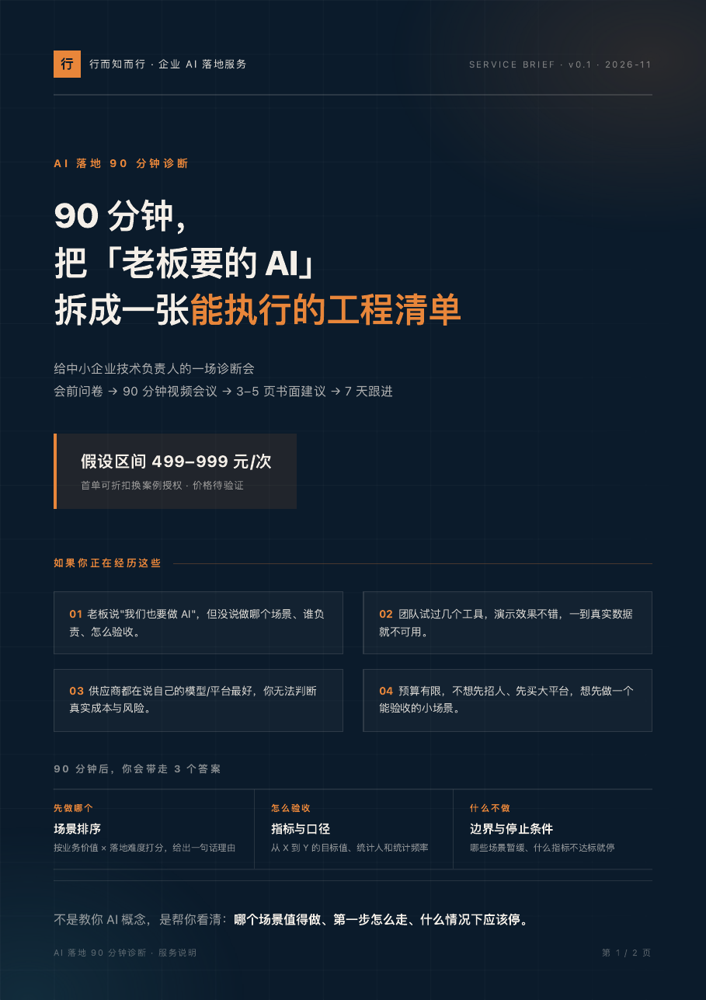

给中小企业技术负责人的一场诊断会：会前问卷 → 90 分钟视频会议 → 3–5 页书面建议 → 7 天跟进。不是 AI 科普课，也不是战略 PPT。
场景优先级矩阵：业务价值 × 落地难度，给出排序和一句话理由。
每个进入建议的场景都写明可量化验收口径：指标、统计人、统计频率。
明确哪些场景暂缓、哪些指标不达标就停、哪些风险必须提前处理。

假设区间 499–999 元/次（待验证），首单可折扣换脱敏案例授权。不做纯战略咨询、不做供应商选型代理、不做没有验收标准的项目、不做系统开发和实施、不承诺效果。
预约方式：微信 待填写 · 邮箱 待填写 · 公众号后台回复「诊断」。
下载服务说明